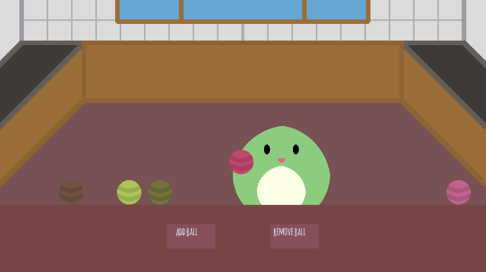
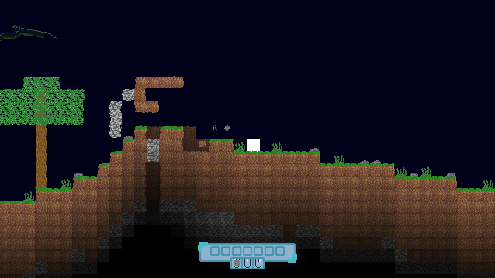

Projects
Squishy Tech Demo
This 2D tech demo showcases a soft-body character and some balls you can throw around and play with. Its an early showcase of a game I am working on. It can be downloaded at louis-braidwood.itch.io, the github link can also be found on that page
Survival Platformer
This game is something I worked on for a few weeks, it has building, crafting, mining, procedurally generated levels and caves. I wanted to continue with it for a year or so, but University was more important at the time so I stopped development. I may return to it one day, but for now the source code can be found on github.
Procedural Generator

This piece of software takes in several values from the user, and uses those values to create a unique noise-map. It was created for my Advanced Higher CS project but I've since used it for generating levels in games. It can be downloaded at louis-braidwood.itch.io.
Geometry Clicker

This game was made in 12 hours and is probably the project I'm most proud of. Its a simple clicker game but is really fun for passing the time. It can be downloaded at louis-braidwood.itch.io.
MMO IO Game

This multiplayer game was created as a 2nd year computer science project and is similar to the popular online games agar.io and slither.io. The source code can be found at github. (I got an A)
Freerunner

This simple game was made in 10 hours as a personal challenge in Java. It's extremely basic but addictivly fun. Not perfect, since I only worked on it for the 10 hours I allowed myself, but its still something I'm glad I made. It can be downloaded at louis-braidwood.itch.io.
3D Engine

I made this 3D world when I was learning C++ and OpenGL. It has a few interesting features such as blinn-phong lighting, specular water, particles and a procedural world created using Simplex Noise.